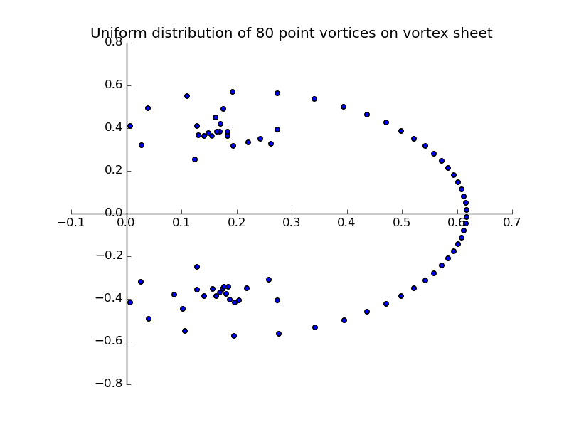
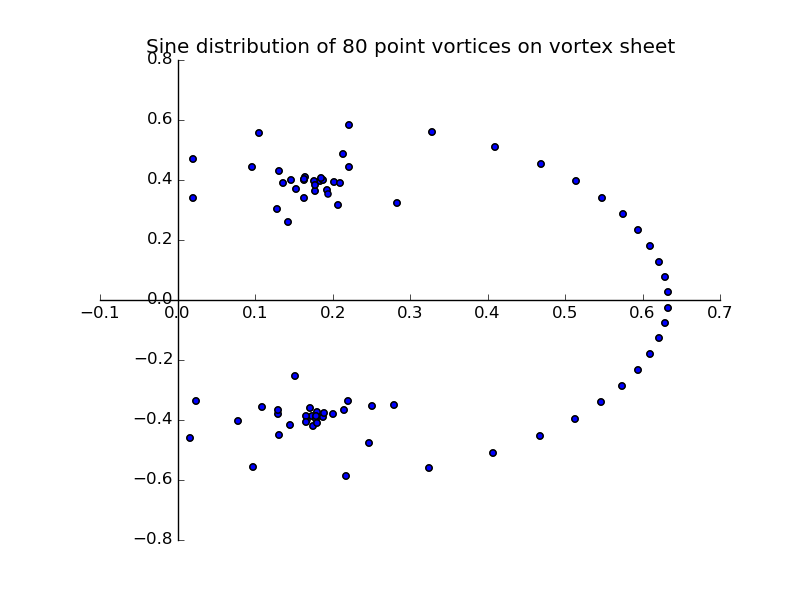
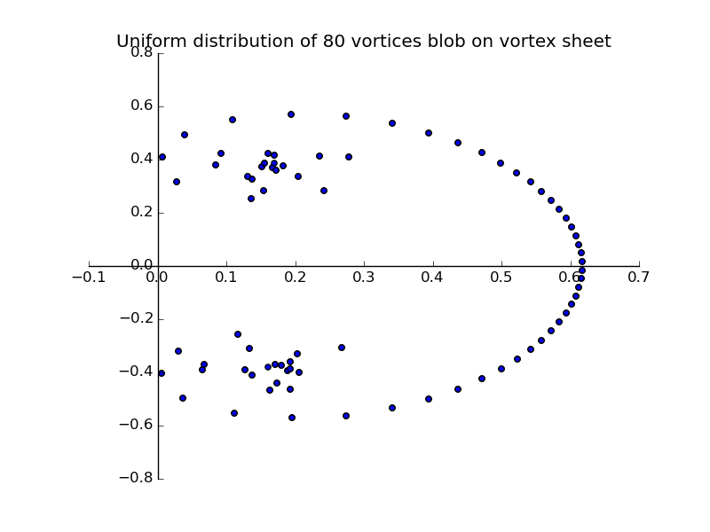
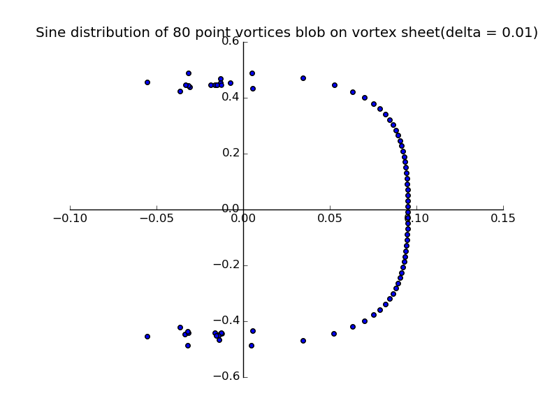
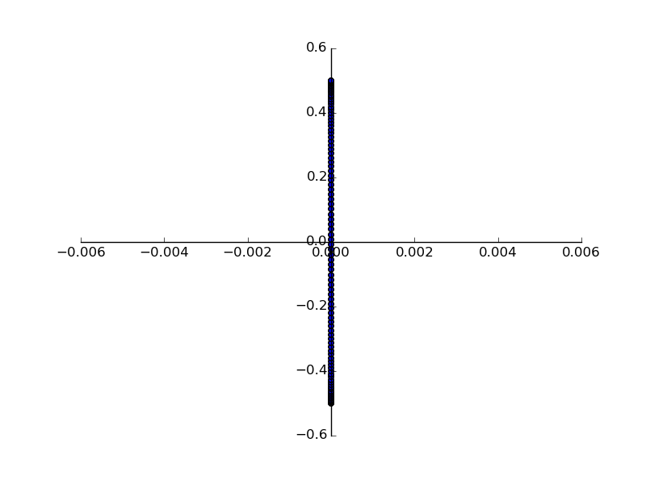
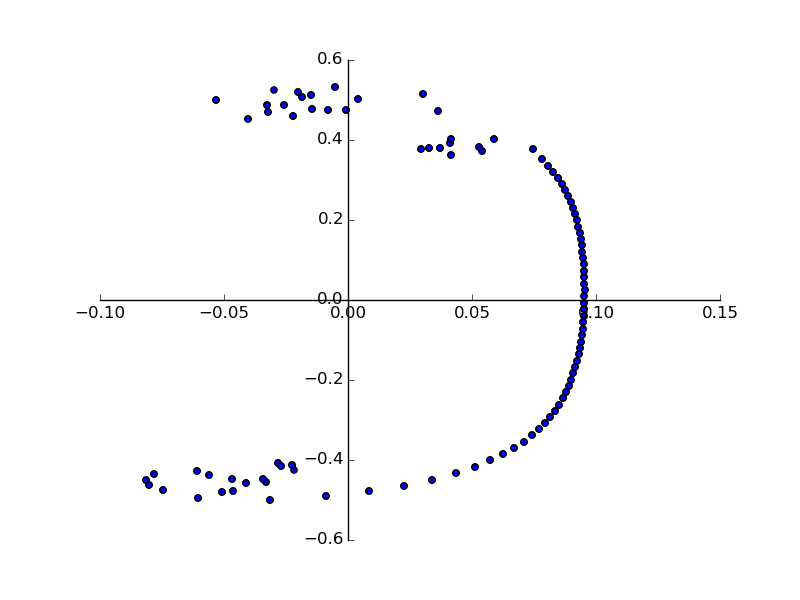
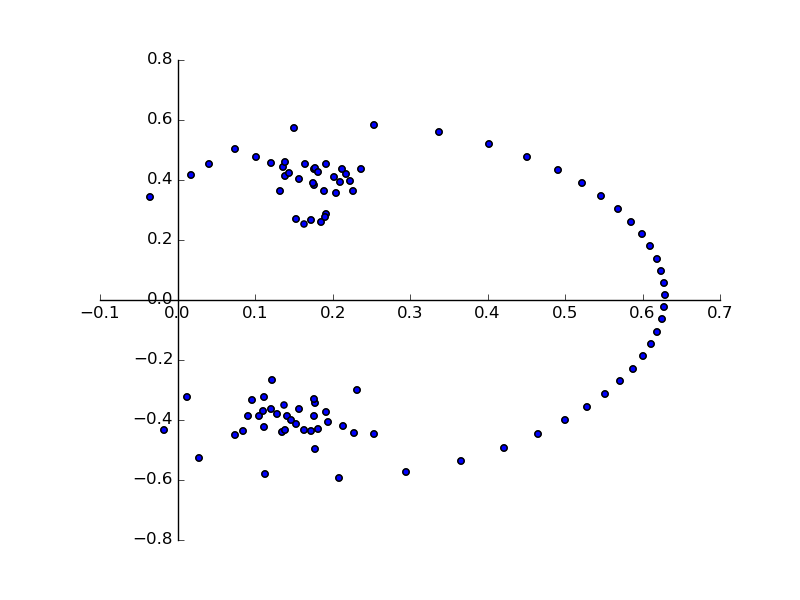

The vortex sheet when discretized using point vortices, in uniform distribution or sine distrbution is as shown in figure.
 The vortex sheet when discretized using vortex blob methods, in uniform distribution or sine distrbution is as shown in figure.
 The evolution of the roll-up of vortex sheet discretized using 100 vortex blobs (Kransy blob method)occurs as follows:
At t = 0 sec:
At t = 0.1 sec:
At t = 1 sec:
